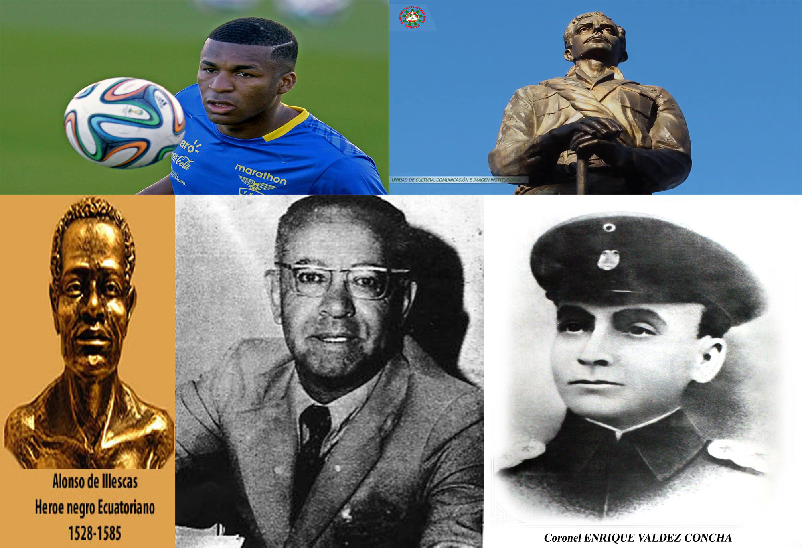

Algunos de los personajes

1 Alonso de illesca
fue un liberto cimarrón, fundador y líder del cacicazgo Reino de los Zambos de Esmeraldas y reconocido héroe nacional ecuatoriano y considerado como el máximo héroe de la libertad afroecuatoriana .
2 Luis Vargas Torres
fue un revolucionario, político y militar ecuatoriano clave en la Revolución Liberal de Eloy Alfaro.Nació en Esmeraldas, hijo de José Vargas y de Delfina Torres de la Carrera. Quedó huérfano de padre a muy temprana edad, y fue enviado a Quito a realizar sus estudios. Sus hermanos fueron los héroes liberales Pedro, José María, Clemente y Carlos Concha Torres.